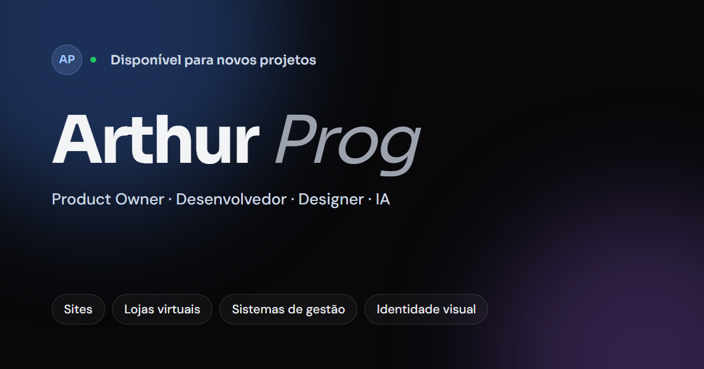

Rodada 2 — Conceito A · Em construção
O símbolo mostra como foi construído — combina com a seção “Método” do site e com uma empresa que constrói sistemas. Três formas de levar isso adiante, da mais literal à mais contida.
Exatamente como está: grade, guias e o ladrilho fazem parte do logo em todas as aplicações.
Forte em avatar, capa, hero. Fraco em cabeçalho e favicon: a grade vira ruído abaixo de ~64px, e não sobrevive a bordado nem impressão.
Sem ladrilho nem grade. Ficam o círculo tracejado e as guias, que atravessam o nome — a linha do bojo vira a linha de base do texto.
Forte em cabeçalhos, propostas, apresentações. Atenção: as guias precisam de espaço livre ao redor; abaixo de 32px usa-se o símbolo sólido.
O logo é o símbolo sólido; a construção aparece conforme o espaço permite — e em movimento, o símbolo se monta na tela.
Forte em tudo: sólido onde precisa ser legível; planta em avatar, capas, loading e abertura de vídeo (sequência 01 → 04).
Prog Soluções · Identidade visual · Proposta 01 · Out 2026
01 — Análise do portfólio
Valores lidos diretamente do CSS publicado (index-CfpJVUId.css), do favicon e da imagem OG — não estimados a olho. O site define as cores em oklch; os HEX abaixo são a conversão feita pelo próprio navegador.

REFERÊNCIA · og-pt.png — peso forte + itálico leve, aura azul, fundo quase preto
Tipografia do site
Linguagem gráfica
Grade de 74px com máscara radial · auras desfocadas · easing cubic-bezier(.16, 1, .3, 1) · nenhum canto vivo.
O que a marca herda
Deduzido, não publicado
O site só tem tema escuro. As versões claras derivam do botão sólido (#f2f3f5 com #08080a) e de um acento escurecido do mesmo matiz — #3860ac, oklch(50% .13 262), que o site já usa na aura do fundo. Contraste 5,5:1 sobre #f2f3f5.
Analisei home, /planos e o CSS global; não inspecionei cada página de case individualmente.
02 — Três direções
Nenhuma cor nova foi adicionada. As diferenças estão na forma, na construção e na relação entre símbolo e nome.
Um P feito de duas peças: uma pílula (estrutura) e um arco (solução), separadas por um corte. É a inicial — e também é construção: módulos que se encaixam.
Coerência — pílula e círculo são as formas das tags e do badge “AP”. Haste na cor do texto, arco no acento 262.
Pequeno — continua um P em 16px; o corte fecha opticamente sem perder a letra.
Risco — monogramas em P são comuns; a assinatura está no corte e no arco aberto.
Duas peças em L que se encaixam e formam um quadrado com um vazio no centro. Integração de sistemas — ERP, CRM, APIs — sem circuitos, nós ou setas.
Coerência — raio de card, simetria rotacional; nome em Sora + JetBrains Mono, como os rótulos do site.
Pequeno — forma quadrada ocupa muito bem favicon e ícone de app.
Risco — abstrato: não carrega o “P” e precisa de tempo para virar memória. O quadrado é mais rígido que o vocabulário redondo do site.
O gesto tipográfico do portfólio vira marca: “Prog” em Sora 600 e “Soluções” em DM Sans itálico, com o mesmo gradiente azul → ciano do título do hero.
Coerência — máxima: é literalmente a tipografia e o itálico do site.
Símbolo — herda o badge circular do “AP”, agora com “P”.
Risco — o símbolo é fraco sozinho; o gradiente não se reproduz em uma cor, bordado ou impressão; fica próximo demais da marca pessoal.
03 — Recomendação
braço 1u · corte 3u · traço 8u
braço 2u · corte 2,5u · traço 8u · grade 48u
Ajustes de refinamento
Bojo — o braço do arco passa de 1u para 2u. O arco deixa de parecer um parêntese e passa a ler como bojo de P.
Corte — de 3u para 2,5u: visível a partir de 24px, sem quebrar a letra em 16px.
Corte pequeno — abaixo de 24px usa-se um desenho próprio: traço 9u, corte 2u.
Nome — “Soluções” sobe de Sora 300 para 400; a 300 desaparecia em dashboards e no fundo claro. Caixa-alta do nome ≈ altura do bojo; espaço símbolo–nome = 14u.
04 — Sistema de marca v1
4.1 · Logo principal
4.2 · Versões de composição
Horizontal — principal. Sites, cabeçalhos, propostas.
Vertical — símbolo acima. Capas, telas de login, eventos.
Compacta — nome em duas linhas. Sidebars, rodapés, assinaturas de e-mail.
4.3 · Símbolo isolado
4.4 · Monocromáticas
4.5 · Paleta da marca
Fora da marca: ciano #43d5dc (só gradientes de destaque no site), verde #5fd37f (só status), roxo #62488c (só atmosfera).
4.6 · Fontes
4.7 · Orientações de aplicação
Área de proteção — x = 2/3 da altura do símbolo (24u, o bojo) em todos os lados. Nada entra nesse espaço.
Tamanhos mínimos — horizontal: 104px de largura (impressão: 25mm). Símbolo: 16px, sempre com o corte pequeno abaixo de 24px.
Não fazer
4.8 · Coerência com o portfólio e aplicações